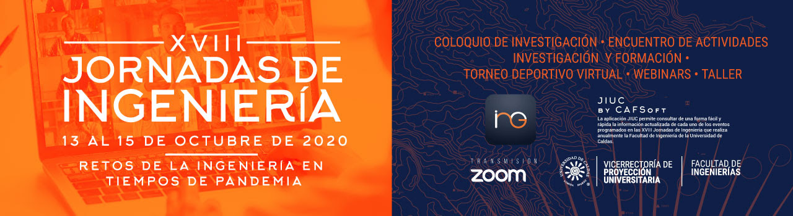

Manizales, abr. 03 de 2014 - Agencia de Noticias Unicersidad Nacional- La innovación busca explicar conceptos sobre verdad, Un juego que permite a las víctimas del conflicto armado conocer justicia, prevención, protección, asistencia, atención, sobre la Ley 1448 del 2011 reparación integral y participación. es la nueva creación de Anglus, microempresa del Parque de Innovación Empresarial de la U.N. en Manizales. El juego, denominado Vitimalz, contiene toda la información sobre la ley que estipula los deberes y derechos que tienen las víctimas para la restitución de beneficios que otorga el Gobierno nacional.
Sin abuso
Fundación Para la Confianza es una organización sin fines de lucro, creada el año 2010 por James Hamilton, Juan Carlos Cruz, Juan Pablo Hermosilla y José Andrés Murillo, con la misión de luchar contra el abuso infantil y acompañar y orientar a quienes han sido víctimas de estos delitos.
Embarazadas
Embaraza2 Embaraza2 es un juego para mayores de 12 años de edad, con retos y habilidades y termina cuando quede un último jugador, aquel que no resultó ni embarazado ni con una enfermedad de transmisión sexual. Tiene una baraja de 55 cartas de diferentes tipos, entre ellas, cóndón, día después, cortejo, no es no, ETS (enfermedades de transmisión sexual). Para jugarlo se necesita de dos a cinco jugadores y cada partida puede tardar de 10 a 20 minutos. “Lo que pretendemos es reducir los 408 nacimientos diarios que se dan en Colombia entre mujeres de 10 y 19 años de edad. Por eso fue pensado para los jóvenes de las instituciones educativas del país y también para los estudiantes de primer semestre de las universidades”, manifestó Ángelo Quintero, administrador de empresas de la Universidad Nacional de Colombia (U.N.) Sede Manizales.
Vivelab ATLANTICO
Los Vivelabs, son una iniciativa nacional para incentivar el desarrollo de contenidos digitales a través de la implementación de una plataforma de última tecnología, de fácil acceso para emprendedores de la región. El proyecto Vivelab Atlántico fue abanderado por el Ministerio de las Tecnologías de la Información y las Comunicaciones de Colombia, MinTIC, en el marco del Plan Vive Digital Regional, con el apoyo de Colciencias. Mediante Convocatoria pública 585 de 2012, la Universidad del Atlántico. Desde entonces, el Vivelab Atlántico es operado por la Universidad del Atlántico, a través de la Vicerrectoría de Investigaciones, Extensión Y Proyección Social. Se encuentra ubicado al interior de la Universidad, en la sede norte, abierto al servicio de la comunidad en general.
Embaraza2 es un juego para mayores de 12 años de edad, con retos y habilidades y termina cuando quede un último jugador, aquel que no resultó ni embarazado ni con una enfermedad de transmisión sexual. Tiene una baraja de 55 cartas de diferentes tipos, entre ellas, cóndón, día después, cortejo, no es no, ETS (enfermedades de transmisión sexual). Para jugarlo se necesita de dos a cinco jugadores y cada partida puede tardar de 10 a 20 minutos. “Lo que pretendemos es reducir los 408 nacimientos diarios que se dan en Colombia entre mujeres de 10 y 19 años de edad. Por eso fue pensado para los jóvenes de las instituciones educativas del país y también para los estudiantes de primer semestre de las universidades”, manifestó Ángelo Quintero, administrador de empresas de la Universidad Nacional de Colombia (U.N.) Sede Manizales. Algunas reglas: Cada jugador recibe cinco cartas, entre ellas una de preservativo o condón, que no se deben dejar ver por los otros participantes. El juego continúa en el sentido de las manecillas del reloj. El competidor que inicia jugará una carta de su mano y debe seguir las instrucciones que allí se indican. El jugador termina su turno arrastrando una carta, pero cuando le sale embarazo o ETS (enfermedades de transmisión sexual) termina su participación en la partida y queda eliminado, a no ser que tenga un preservativo o condón que lo salve.
Trainbox
Sunnyvale, CA - Playvox anunció el jueves 13 de febrero de 2020 la adquisición de Trainbox, una empresa de aprendizaje interactivo. “Trainbox es un gran equipo con un producto robusto que aporta innovación y nueva funcionalidad a las aplicaciones de capacitación y aprendizaje de Playvox Agent Optimization Suite ”, dijo Oscar Giraldo, fundador y director ejecutivo de Playvox. "Estamos muy contentos de dar la bienvenida al equipo de Trainbox a la familia Playvox y de extender estas capacidades a nuestros clientes". Con la adquisición de Trainbox, Playvox potenciará y mejorará la gamificación, la interactividad y la personalización en la plataforma de la empresa. Al hacerlo, hará que las aplicaciones de aprendizaje y capacitación sean aún más dinámicas, efectivas e interactivas para los agentes de servicio al cliente de todo el mundo. Playvox ofrecerá ahora un sistema de aprendizaje de última generación. Aunque es la primera adquisición de Playvox, Giraldo dijo que la compañía siempre está buscando formas de mejorar la plataforma Playvox y brindar a los clientes el mayor valor posible para optimizar las operaciones de servicio al cliente centradas en el agente. Giraldo dijo que el valor puede presentarse de dos formas: orgánico y mediante adquisición.